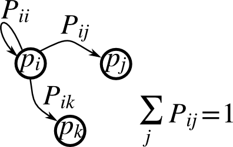

Some exercises#
import numpy as np
import matplotlib.pyplot as plt
Array manipulations#
Exercise 22
Form the 2-D array (without typing it in explicitly)
[[1, 6, 11],
[2, 7, 12],
[3, 8, 13],
[4, 9, 14],
[5, 10, 15]]
and generate a new array containing its 2nd and 4th rows.
Divide each column of the array
import numpy as np
a = np.arange(25).reshape(5, 5)
elementwise with the array b = np.array([1., 5, 10, 15, 20]).
(Hint: np.newaxis).
Harder one, random numbers
Generate a 10 x 3 array of random numbers (in range [0,1]). For each row, pick the number closest to 0.5.
Use
absandargminto find the columnjclosest for each row.Use fancy indexing to extract the numbers. (Hint:
a[i,j]– the arrayimust contain the row numbers corresponding to stuff inj.)
Solution to Exercise 22
import numpy as np
from numpy import newaxis
# Part 1.
a = np.arange(1, 16).reshape(3, -1).T
print(a)
[[ 1 6 11]
[ 2 7 12]
[ 3 8 13]
[ 4 9 14]
[ 5 10 15]]
Picture manipulation: Framing a Face#
Let’s do some manipulations on NumPy arrays by starting with an image
of a raccoon. scipy provides a 2D array of this image with the
scipy.datasets.face function:
import scipy as sp
face = sp.datasets.face(gray=True) # 2D grayscale image
Here are a few images we will be able to obtain with our manipulations: use different colormaps, crop the image, change some parts of the image.

Let’s use the imshow function of matplotlib to display the image.
import matplotlib.pyplot as plt
face = sp.datasets.face(gray=True)
plt.imshow(face)
<matplotlib.image.AxesImage at 0x10d4b5970>
The face is displayed in false colors. A colormap must be specified for it to be displayed in grey.
plt.imshow(face, cmap=plt.cm.gray)
<matplotlib.image.AxesImage at 0x10f3ae3c0>
Narrow centering#
Create an array of the image with a narrower centering; remove 100 pixels from
all the borders of the image. To check the result, display this new array with
imshow.
crop_face = face[100:-100, 100:-100]
Frame face#
We will now frame the face with a black locket. For this, we need to create a mask corresponding to the pixels we want to be black. The center of the face is around (660, 330), so we defined the mask by this condition `(y-300)**2
(x-660)**2`
sy, sx = face.shape
y, x = np.ogrid[0:sy, 0:sx] # x and y indices of pixels
y.shape, x.shape
((768, 1), (1, 1024))
centerx, centery = (660, 300) # center of the image
mask = ((y - centery)**2 + (x - centerx)**2) > 230**2 # circle
then we assign the value 0 to the pixels of the image corresponding to the mask. The syntax is extremely simple and intuitive:
face[mask] = 0
plt.imshow(face)
<matplotlib.image.AxesImage at 0x10f58d0a0>
Follow-up:
copy all instructions of this exercise in a script called :
face_locket.pythen execute this script in IPython with%run face_locket.py.Change the circle to an ellipsoid.
Data statistics#
The data in populations.txt
describes the populations of hares and lynxes (and carrots) in
northern Canada during 20 years:
data = np.loadtxt('data/populations.txt')
year, hares, lynxes, carrots = data.T # trick: columns to variables
import matplotlib.pyplot as plt
plt.axes([0.2, 0.1, 0.5, 0.8])
plt.plot(year, hares, year, lynxes, year, carrots)
plt.legend(('Hare', 'Lynx', 'Carrot'), loc=(1.05, 0.5))
<matplotlib.legend.Legend at 0x10f2b7920>
Exercise 23
Compute and print, based on the data in populations.txt…
The mean and std of the populations of each species for the years in the period.
Which year each species had the largest population.
Which species has the largest population for each year. (Hint:
argsort& fancy indexing ofnp.array(['H', 'L', 'C']))Which years any of the populations is above 50000. (Hint: comparisons and
np.any)The top 2 years for each species when they had the lowest populations. (Hint:
argsort, fancy indexing)Compare (plot) the change in hare population (see
help(np.gradient)) and the number of lynxes. Check correlation (seehelp(np.corrcoef)).
… all without for-loops.
Solution to Exercise 23
import numpy as np
data = np.loadtxt("data/populations.txt")
year, hares, lynxes, carrots = data.T
populations = data[:, 1:]
print(" Hares, Lynxes, Carrots")
print("Mean:", populations.mean(axis=0))
print("Std:", populations.std(axis=0))
j_max_years = np.argmax(populations, axis=0)
print("Max. year:", year[j_max_years])
max_species = np.argmax(populations, axis=1)
species = np.array(["Hare", "Lynx", "Carrot"])
print("Max species:")
print(year)
print(species[max_species])
above_50000 = np.any(populations > 50000, axis=1)
print("Any above 50000:", year[above_50000])
j_top_2 = np.argsort(populations, axis=0)[:2]
print("Top 2 years with lowest populations for each:")
print(year[j_top_2])
hare_grad = np.gradient(hares, 1.0)
print("diff(Hares) vs. Lynxes correlation", np.corrcoef(hare_grad, lynxes)[0, 1])
import matplotlib.pyplot as plt
plt.plot(year, hare_grad, year, -lynxes)
plt.savefig("plot.png")
Hares, Lynxes, Carrots
Mean: [34080.95238095 20166.66666667 42400. ]
Std: [20897.90645809 16254.59153691 3322.50622558]
Max. year: [1903. 1904. 1900.]
Max species:
[1900. 1901. 1902. 1903. 1904. 1905. 1906. 1907. 1908. 1909. 1910. 1911.
1912. 1913. 1914. 1915. 1916. 1917. 1918. 1919. 1920.]
['Carrot' 'Carrot' 'Hare' 'Hare' 'Lynx' 'Lynx' 'Carrot' 'Carrot' 'Carrot'
'Carrot' 'Carrot' 'Carrot' 'Hare' 'Hare' 'Hare' 'Lynx' 'Carrot' 'Carrot'
'Carrot' 'Carrot' 'Carrot']
Any above 50000: [1902. 1903. 1904. 1912. 1913. 1914. 1915.]
Top 2 years with lowest populations for each:
[[1917. 1900. 1916.]
[1916. 1901. 1903.]]
diff(Hares) vs. Lynxes correlation -0.917924848031534
Crude integral approximations#
Exercise 24
Write a function f(a, b, c) that returns \(a^b - c\). Form
a 24x12x6 array containing its values in parameter ranges [0,1] x [0,1] x [0,1].
Approximate the 3-d integral
over this volume with the mean. The exact result is: \(\ln 2 - \frac{1}{2}\approx0.1931\ldots\) — what is your relative error?
(Hints: use elementwise operations and broadcasting.
You can make np.ogrid give a number of points in given range
with np.ogrid[0:1:20j].)
Reminder Python functions:
def f(a, b, c):
return some_result
Solution to Exercise 24
import numpy as np
from numpy import newaxis
def f(a, b, c):
return a**b - c
a = np.linspace(0, 1, 24)
b = np.linspace(0, 1, 12)
c = np.linspace(0, 1, 6)
samples = f(a[:, newaxis, newaxis], b[newaxis, :, newaxis], c[newaxis, newaxis, :])
# or,
#
# a, b, c = np.ogrid[0:1:24j, 0:1:12j, 0:1:6j]
# samples = f(a, b, c)
integral = samples.mean()
print("Approximation:", integral)
print("Exact:", np.log(2) - 0.5)
Approximation: 0.1888423460296792
Exact: 0.1931471805599453
Mandelbrot set#
Exercise 25
Write a script that computes the Mandelbrot fractal. The Mandelbrot iteration:
N_max = 50
some_threshold = 50
c = x + 1j*y
z = 0
for j in range(N_max):
z = z**2 + c
/var/folders/hd/rfxyn9gx4bl39bvwzrgn3rtr0000gn/T/ipykernel_91679/585550489.py:8: RuntimeWarning: overflow encountered in square
z = z**2 + c
/var/folders/hd/rfxyn9gx4bl39bvwzrgn3rtr0000gn/T/ipykernel_91679/585550489.py:8: RuntimeWarning: invalid value encountered in square
z = z**2 + c
Point (x, y) belongs to the Mandelbrot set if \(|z|\) <
some_threshold.
Do this computation by:
Construct a grid of c = x + 1j*y values in range [-2, 1] x [-1.5, 1.5]
Do the iteration
Form the 2-d boolean mask indicating which points are in the set
Save the result to an image with:
import matplotlib.pyplot as plt plt.imshow(mask.T, extent=[-2, 1, -1.5, 1.5]) plt.gray() plt.savefig('mandelbrot.png')
Solution to Exercise 25
import numpy as np
import matplotlib.pyplot as plt
from numpy import newaxis
def compute_mandelbrot(N_max, some_threshold, nx, ny):
# A grid of c-values
x = np.linspace(-2, 1, nx)
y = np.linspace(-1.5, 1.5, ny)
c = x[:, newaxis] + 1j * y[newaxis, :]
# Mandelbrot iteration
z = c
for j in range(N_max):
z = z**2 + c
mandelbrot_set = abs(z) < some_threshold
return mandelbrot_set
# Save
mandelbrot_set = compute_mandelbrot(50, 50.0, 601, 401)
plt.imshow(mandelbrot_set.T, extent=[-2, 1, -1.5, 1.5]) # type: ignore[arg-type]
plt.gray()
plt.savefig("mandelbrot.png")
/var/folders/hd/rfxyn9gx4bl39bvwzrgn3rtr0000gn/T/ipykernel_91679/2370088976.py:17: RuntimeWarning: overflow encountered in square
z = z**2 + c
/var/folders/hd/rfxyn9gx4bl39bvwzrgn3rtr0000gn/T/ipykernel_91679/2370088976.py:17: RuntimeWarning: invalid value encountered in square
z = z**2 + c

Markov chain#

Exercise 26
Markov chain transition matrix P, and probability distribution on
the states p:
0 <= P[i,j] <= 1: probability to go from stateito statejTransition rule: \(p_{new} = P^T p_{old}\)
all(sum(P, axis=1) == 1),p.sum() == 1: normalization
Write a script that works with 5 states, and:
Constructs a random matrix, and normalizes each row so that it is a transition matrix.
Starts from a random (normalized) probability distribution
pand takes 50 steps =>p_50Computes the stationary distribution: the eigenvector of
P.Twith eigenvalue 1 (numerically: closest to 1) =>p_stationaryRemember to normalize the eigenvector — I didn’t…
Checks if
p_50andp_stationaryare equal to tolerance 1e-5
Toolbox: np.random, @, np.linalg.eig, reductions, abs(), argmin,
comparisons, all, np.linalg.norm, etc.
Solution to Exercise 26
Solution to Markov chain exercise.
import numpy as np
rng = np.random.default_rng(27446968)
n_states = 5
n_steps = 50
tolerance = 1e-5
# Random transition matrix and state vector
P = rng.random(size=(n_states, n_states))
p = rng.random(n_states)
# Normalize rows in P
P /= P.sum(axis=1)[:, np.newaxis]
# Normalize p
p /= p.sum()
# Take steps
for k in range(n_steps):
p = P.T @ p
p_50 = p
print(p_50)
# Compute stationary state
w, v = np.linalg.eig(P.T)
j_stationary = np.argmin(abs(w - 1.0))
p_stationary = v[:, j_stationary].real
p_stationary /= p_stationary.sum()
print(p_stationary)
# Compare
if all(abs(p_50 - p_stationary) < tolerance):
print("Tolerance satisfied in infty-norm")
if np.linalg.norm(p_50 - p_stationary) < tolerance:
print("Tolerance satisfied in 2-norm")
[0.15219309 0.25577972 0.22811916 0.14261754 0.22129049]
[0.15219309 0.25577972 0.22811916 0.14261754 0.22129049]
Tolerance satisfied in infty-norm
Tolerance satisfied in 2-norm